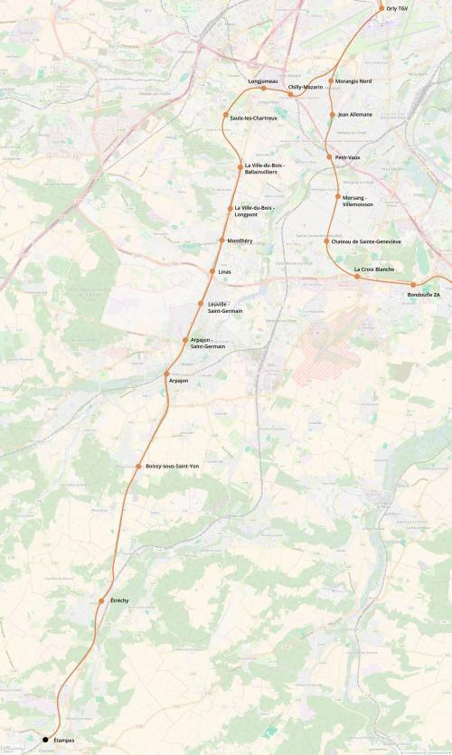

RER F Étampes
RER F Étampes
Orly TGV - Étampes
Création de la ligne F du RER.
La création du RER F au sud correspond à la résurrection l'Arpajonnais, une ancienne ligne de chemin de fer qui reliait Paris à Arpajon le long de la nationale 20. Cette section du RER F permettra de reporter une partie du trafic automobile de cette route nationale vers les transports en commun. Et ainsi soulager la nationale 20 mais également l'autoroute A6 entre Paris et Chilly-Mazarin.
Le RER F sera aussi un moyen pour les voyageurs de se rendre à la gare d'Orly TGV et l'aéroport d'Orly en venant du sud. En correspondance avec le RER G, le RER F permettra aux étudiants de rejoindre le pôle universitaire d'Orsay.
Voir les autres projets associés à cette ligne
Carte

Cliquer pour agrandir
Si ce projet vous intéresse n'hésitez pas à le (re-)partagez sur les réseaux sociaux ou par courriel ou à en parler autour de vous.
Si vous souhaitez travailler à la concrétisation de ce projet, passez à l'action et contactez nous.
Commenter